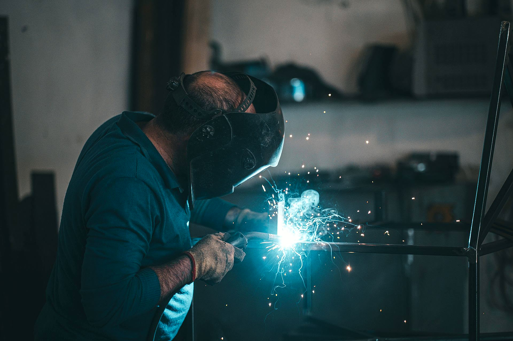
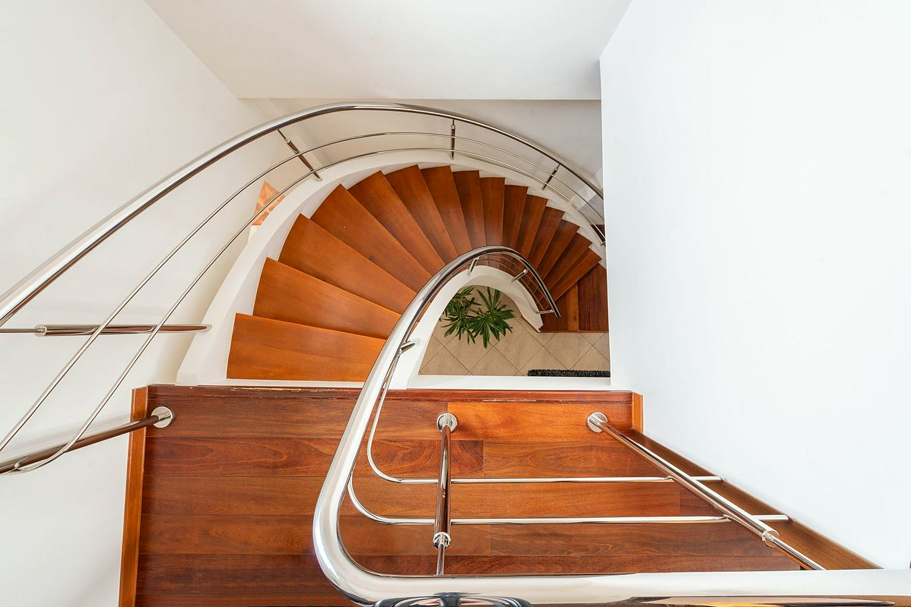
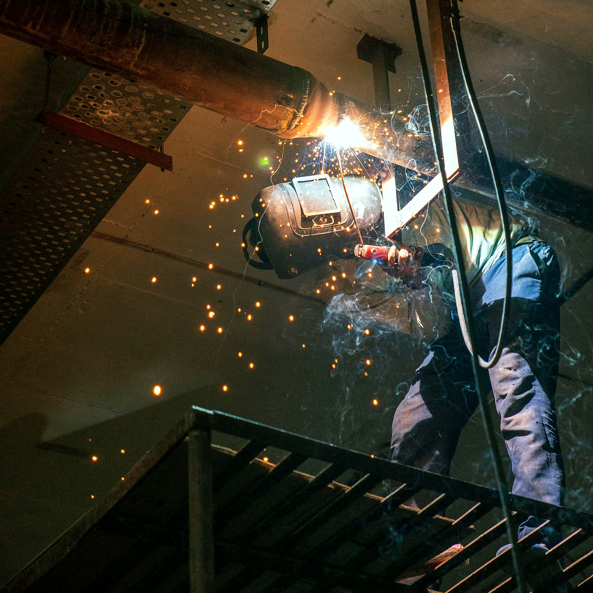
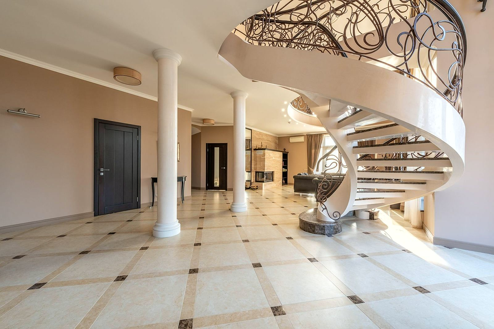
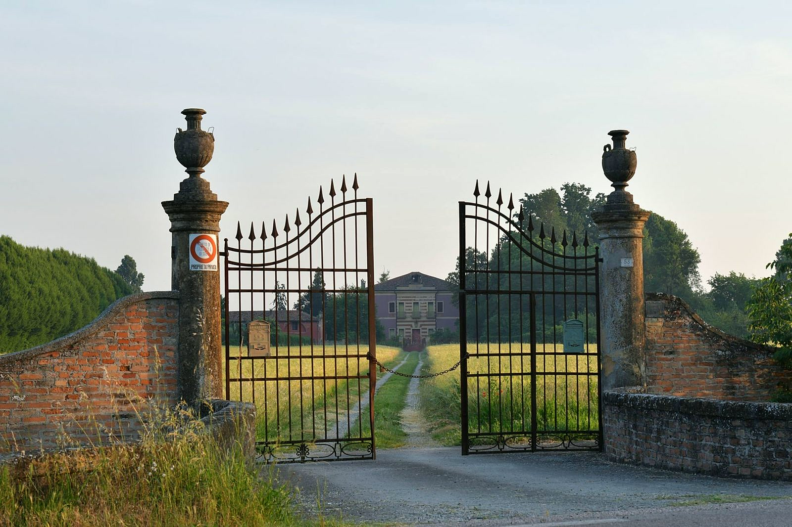
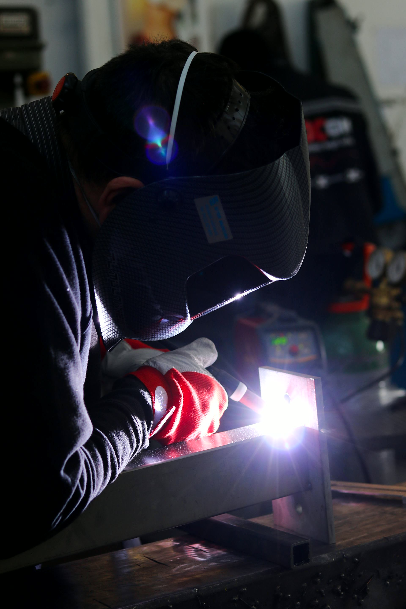

Schody i balustrady ze stali spawane pod wymiar
Robimy schody, balustrady, ogrodzenia i konstrukcje stalowe na zamówienie. Mierzymy na miejscu, spawamy u siebie i montujemy gotową konstrukcję.
Zadzwoń teraz +48 726 067 340- Pomiar na miejscu
- Spawanie pod wymiar
- Montaż konstrukcji
Najczęściej pytacie o
Opisz, czego potrzebujesz, i podaj poglądowe wymiary. Na tej podstawie powiemy, jak to zrobić i ile może kosztować.

Wiesz, na czym stoisz - na każdym etapie
Od pierwszego telefonu do montażu - krok po kroku.
- 01
Telefon
Dzwonisz i mówisz, czego potrzebujesz: schody, balustrada, ogrodzenie albo konstrukcja.
- 02
Pomiar
Przyjeżdżamy i mierzymy na miejscu, żeby wszystko pasowało co do centymetra.
- 03
Wykonanie
Tniemy i spawamy konstrukcję u siebie.
- 04
Montaż
Przywozimy gotowy element i montujemy go u Ciebie.
Schody, balustrady, konstrukcje
Tak wyglądają rzeczy, które robimy: od schodów i balustrad po ogrodzenia i konstrukcje stalowe.





Stal na zamówienie, od schodów po ogrodzenie
Najczęstsze zlecenia. Przy każdym piszemy, co wchodzi w zakres.
- Schody staloweSchody wewnętrzne i zewnętrzne na stalowej konstrukcji, proste i zabiegowe, także pod drewniane stopnie.Wycena →
- BalustradyBalustrady na schody, antresole, balkony i tarasy. Proste, nowoczesne wzory albo własny pomysł klienta.Wycena →
- Ogrodzenia i bramyPrzęsła, furtki i bramy spawane pod wymiar posesji.Wycena →
- Konstrukcje staloweKonstrukcje na zamówienie: wiaty, zadaszenia, ramy i elementy nośne.Wycena →
- Montaż konstrukcjiGotową konstrukcję przywozimy i montujemy na miejscu.Wycena →
- Usługi spawalniczeSpawanie i drobne prace ślusarskie na zlecenie, także naprawy.Wycena →
Co mówią klienci
Opinie klientów znajdziesz w naszej wizytówce Google.
Dojeżdżamy do Ciebie
Pracujemy w Tuszynie, Łodzi i okolicznych miejscowościach.
- Tuszyn
- + okolice
Potrzebujesz schodów albo balustrady?
Zadzwoń i opisz, co trzeba zrobić. Przyjedziemy na pomiar i przygotujemy wycenę.